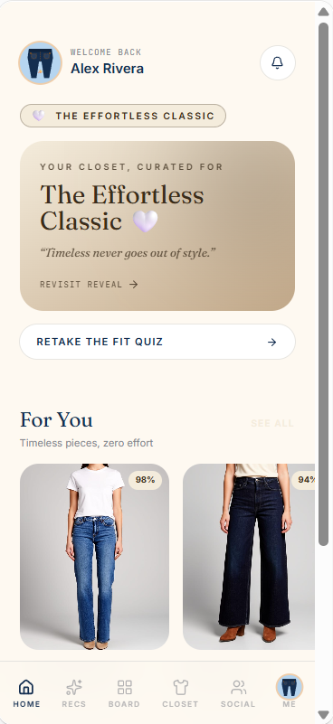

Challenge
Shoppers move constantly between digital research and in-store decisions, but most tools treat those as separate moments. That gap creates decision fatigue and erodes confidence right at the point of purchase.
Case study
A service design concept that bridges digital research and in-store shopping, grounded in customer psychology and journey mapping — prototyped end-to-end in Lovable to test how AI tools reshape ideation and iteration speed.

Shoppers move constantly between digital research and in-store decisions, but most tools treat those as separate moments. That gap creates decision fatigue and erodes confidence right at the point of purchase.
I grounded the experience in customer psychology rather than feature ideas — mapping two full journeys, building service blueprints across digital and in-store touchpoints, and developing personas from behavioral research to understand what actually drives hesitation and confidence.
Click through the onboarding flow below, or open it directly.
Open full prototypeI built the prototype in Lovable, using its AI-assisted workflow to move from concept to a working, clickable experience faster than a manual build would allow. That time savings went straight back into research and iteration — refining the persona logic and journey flow — rather than being spent on repetitive interface assembly.